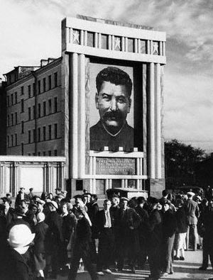

Sunday, May the 9th, 2004
back to: title, date or indexes
This is the intriguing thesis propounded by Aloysius Nestingbird in his new book, entitled Was Dobson Stalin? : Laying Bare The Greatest Secret Of Twentieth Century Communist Politics Once And For All, With Eight Diagrams, Six Colour Plates, A Big Map & Far Too Many Footnotes (Thedoobiebrothers Books, £16.99). Here is a short extract, including one of those infernal footnotes—which itself has a footnote:
Let us consider the fact that Stalin's childhood nickname was “Soso”. Later he became “Koba”, and of course “Stalin” itself is a nickname, the “Man of Steel”. There are profound implications here. Was Dobson, as a child, not known as “Doso”? In his twenties, was it not common for such friends as he had to call him “Doba”? Did he not later become known as the “Man of Bandages?” *
*NOTE : Just before this book went to press, the author received decisive information. Apparently, not one of these nicknames was ever applied to Dobson. Even when he was a babe in swaddling clothes, his parents addressed him as “Dobson”, as did everyone else he ever met throughout his life. There are those who will carp and say my theory is thus invalidated. A pox upon them! Just take a look at these photographs: one shows a gigantic poster of Stalin at the height of his personality cult; the other shows a huge billboard with what is incontrovertibly the image of Dobson.*

* For copyright reasons I am unable to reproduce the extremely similar Dobson photograph.